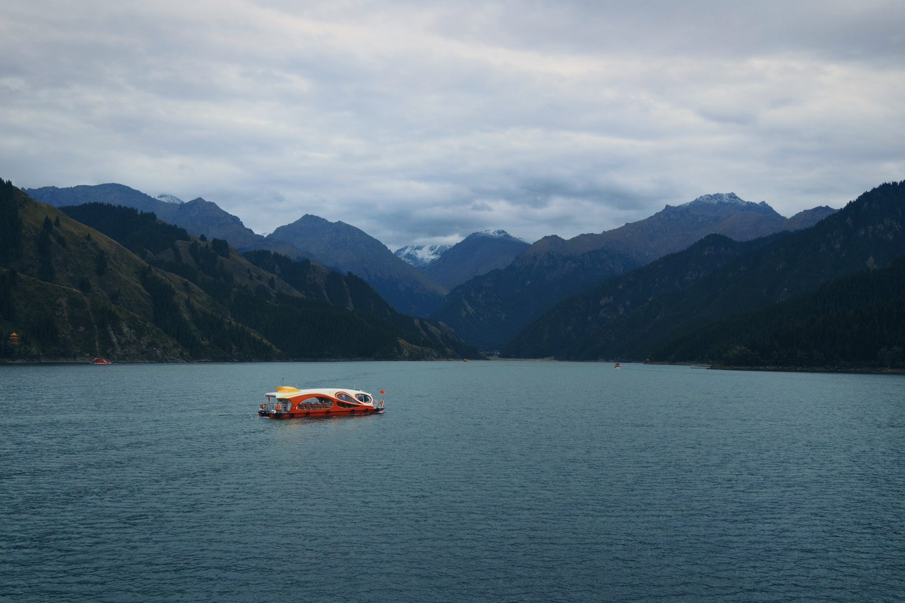

PHOTOS · 摄影
天池 · 云下的湖

上天山那天云很厚，向导说看不到博格达峰的雪顶了。我有点扫兴，可走到湖边还是愣住了——湖太大，太静，静到云压得很低也吵不醒它。
水是化了的雪，所以是那种发灰的蓝绿色，冷得很干净。一艘游船从湖心慢慢划过去，橙色的船身，是整幅青灰山水里唯一的一点暖。我举着相机等它开到画面中间，按了快门。
阴天的天池不惊艳，但耐看。它不像那些一眼就要你惊叹的景，它只是在那儿，山在眼前，云在湖上，你站多久，它就静多久。回来的路上我想，能看到雪顶是运气，能看到云下的湖，也是。
完